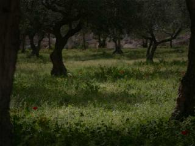
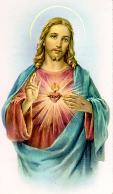

A humanidade não se preocupa em estabelecer uma amizade responsável com DEUS! Na verdade, muitas pessoas só começam a lembrar do SENHOR e pedir a ajuda Divina, quando acontece um fato inusitado e desagradável, que às vezes conduz à tristeza, ou se arrasta por caminhos difíceis e tenebrosos que não permite vislumbrar qualquer solução, ou que são originados por algum tipo de destruição que causa pânico, ou que causa dor e prejuízo material, ou que resulta na morte de algum parente ou ente querido.
Invocando o SENHOR, as pessoas rezam e suplicam para alcançarem as “graças” que necessitam para debelar ou resolver as dificuldades e os problemas que afligem a sua existência. O CRIADOR misericórdia infinita, paternalmente sempre acolhe e responde a prece do suplicante, oferecendo na dimensão Divina, a solução mais adequada e razoável a cada caso, independentemente se o pedido vêm de um fervoroso cristão ou não. Acontece, todavia, que em muitas oportunidades, o PAI ETERNO não proporciona exatamente aquela “graça solicitada”, mas concede outra ou outras “graças” que também beneficiarão o suplicante, embora, em alguns casos, as pessoas permaneçam desapontadas, não enxergando o valor do beneficio recebido, imaginando que DEUS não ouviu e não atendeu o seu pedido. Todavia, o SENHOR sempre ouve as nossas preces e sendo Onisciente, conhece o futuro e sabe exatamente o que é melhor para aquele que suplica uma “graça”. A decisão Divina objetiva sempre nos favorecer, porque DEUS nos ama verdadeiramente, conforme podemos ler na Primeira Carta de São João:“Nisto consiste o Amor: não fomos nós que amamos a DEUS, mas foi ELE quem nos amou e enviou-nos o seu FILHO JESUS como vítima de expiação pelos nossos pecados.” (1 Jo 4,10)
A criatura ao ser colocada no mundo, não representa um ato isolado e acabado, porque DEUS cria a pessoa e envia uma alma que lhe dá a vida, ao mesmo tempo em que administra Sua criação, “chamando” cada criatura ao amor e não se “esquecendo” dela, estando presente e disponível para acolher as suas invocações, as súplicas e manifestações de carinho filial. Além disso, o CRIADOR nos concede o “livre arbítrio”, ou seja, ELE dá a humanidade total liberdade de movimentos, pensamentos e ações, não interferindo e nem impondo a Vontade Divina, a fim de que cada fiel escolha livremente o caminho que melhor lhe aprouver. Por outro lado, a pessoa recebe com sua vida uma quantidade exuberante de graças, de dons e virtudes, além da missão que o SENHOR nos dá, nos oferecendo os meios necessários para alcançarmos a santificação pessoal e a consequente salvação eterna, enquanto no cotidiano cada um se empenha no labor existencial. Por isso mesmo, não podemos viver indiferentes ao “dote Divino”. Para o próprio bem-estar das pessoas, compete a cada um descobrir as suas habilidades e vocação para o trabalho, desenvolvendo as qualidades pessoais e se instruindo através do estudo e da prática funcional, com a intenção de levar o progresso a sua existência, possibilitando-o realizar os ideais e concretizar os seus sonhos. Entretanto, para que a pessoa possa evoluir gradualmente com confiança e segurança, é preciso que ela seja uma criatura “completa e equilibrada”, que viva harmoniosamente com a sua natureza humana, satisfazendo em igualdade de condições as necessidades de seu “Corpo” e da sua “Alma”. Sim, porque cada criatura tem uma “Parte humana”, o Corpo, que nasce do relacionamento amoroso de nossos pais e uma “Parte Divina”, a Alma, que vem de DEUS. Cada pessoa existe com o seu “Corpo” e com a sua “Alma”.Atendemos as necessidades do Corpo, alimentando-o quando temos fome, bebendo água para aliviar a sede, praticando esportes para mantê-lo em forma, dormindo quando temos sono, etc.
Atendemos as necessidades da Alma
unindo-a a DEUS, através de nossas 
Significa dizer que a pessoa interessada em organizar a sua existência e a viver de conformidade com a sua natureza humana, com certeza alcançará êxito em sua vida pessoal e nos seus empreendimentos, porque sabendo atender as necessidades de seu Corpo e da sua Alma, saberá se empenhar em seu trabalho e também estará olhando para DEUS, recebendo do SENHOR além dos dons, das graças e benefícios que ELE derrama igualmente sobre todos os seus filhos, tanto para os bons como para os maus, alcançará também a preciosa recompensa pelas “graças” provenientes dos Sacramentos que receber, das Santas Missas que participar, das boas obras que realizar, as quais, santificarão a sua existência e o fará sentir o prazer indizível de caminhar junto ao CRIADOR.
Estes fatos sinalizam a necessidade da preocupação responsável em satisfazermos igualmente as necessidades de nosso corpo e de nossa alma, porque são atitudes que propõe vida, apesar das próprias fraquezas e limitações da humanidade, que tentam arrastar as pessoas para longe de DEUS. Esta realidade dá alento ao espírito e suscita em cada pessoa um estímulo para empreender um esforço perseverante e dedicado, objetivando buscar com decisão, a energia imprescindível para vencer o maligno, principalmente quando houver alguma “queda” motivada por alguma transgressão. Sim, porque a força a que me refiro é à vontade e a coragem do fiel, que o conduzirá a buscar a “graça Sacramental” e através da Confissão, alcançar o perdão Divino, que o erguerá e o colocará novamente de pé, a fim de poder continuar enfrentando dignamente a batalha espiritual de cada dia.
UM PROBLEMA PREOCUPANTE
O Santo Padre Bento XVI falou: “A difundida falta de consciência da própria culpa é um fenômeno preocupante em nosso tempo”. (Encontro com os Bispos na Suíça – 7/11/2006)
Sua Santidade estava se referindo ao fato de que as pessoas atualmente pecam e imaginam que não estão pecando ou que o seu comportamento ousado e duvidoso não seja considerado uma transgressão contra a Lei e a Moral Divina. Hoje, a maioria das pessoas age no cotidiano de uma maneira totalmente diferente do cristão tradicional! Ao invés de colocarem em sua vida o respeito e o amor a DEUS em primeiro lugar, elegem como condição prioritária satisfazer a sua própria vontade ou um impetuoso desejo momentâneo, sem se preocuparem e nem ao menos questionarem, o aspecto moral do ato, se é correto ou errado proceder daquele modo! Poderíamos citar uma infinidade de exemplos que tornaria o assunto cansativo e deslocaria o foco principal de nosso tema. Por isso mesmo, o bom-senso nos conduz a evidenciar que o pecado existe e que verdadeiramente todos nós somos pecadores.
“Se dissermos que não temos pecado, nos enganamo a nós mesmos e a verdade não está em nós”. (1 Jo 1,8)
Da mesma forma, como realizamos uma
faxina em nossa residência para remover as impurezas que se acumulam,
objetivando deixar o lar mais limpo e agradável, devemos periodicamente,
numa frequência responsavelmente determinada, aproximarmos
do Sacramento da Penitência ou Confissão na Igreja, esforçando-nos em
reconhecer as nossas próprias transgressões e manifestar um arrependimento
sincero, a fim de recebermos a “Graça
do Perdão” do ESPÍRITO SANTO,
através do sacerdote no confessionário. O reconhecimento da culpa é uma
providência importante, da mesma forma que é reconfortante
e agradável à experiência libertadora de receber o “Perdão Divino”. O fato de uma pessoa enfrentar o desafio de seus medos, de sua
timidez, assim como de uma possível preguiça espiritual, na situação real de
ter necessidade do perdão para a sua vida, por causa de seus muitos pecados,
a fim de encontrar a felicidade e a paz espiritual, ao se apresentar humilde
e indefesa diante de DEUS fará uma experiência comovedora e inesquecível,
porque será o seu encontro pessoal com o infinito e incomensurável Amor do
SENHOR JESUS.
Neste momento acontece a emoção inesquecível! Depois de receber o Perdão
de DEUS, pela intercessão do sacerdote, qualquer pessoa sentirá a alma mais
leve, até tangenciando a esfera do Divino, com a consciência aliviada da pressão
devastadora do maligno. É bem verdade que não estará isenta das tentações
futuras, mas terá a força do ESPÍRITO para ajudá-la, que lhe impulsionará
corajosamente a combater com mais firmeza e intensidade, todas as investidas
do mal.
Sua alegria interior alcançará uma plenitude maior quando ao participar da Santa Missa, receber o próprio DEUS na Sagrada Comunhão. Por que o Corpo, Sangue, Alma e Divindade de NOSSO SENHOR JESUS CRISTO é a “Graça Maior”que inundará a existência e infundirá no fiel, mais discernimento e a disposição para cumprir sua missão existencial e ultrapassar com dignidade, todos os obstáculos de sua vida.
Todavia, é triste lembrar que existem muitas pessoas, que sem estarem devidamente preparadas e verdadeiramente arrependidas de suas transgressões, recebem a Sagrada Eucaristia e se alimentam do próprio DEUS, sem qualquer constrangimento ou remorso, agindo com a maior normalidade. Sem lembrar que pecou, ou nem pensando no assunto com seriedade, recebem a Sagrada Comunhão! Não deve ser assim, porque uma atitude inconsequente do pecador pode originar a sua condenação. Antes de receber JESUS SACRAMENTADO é dever e responsabilidade do cristão, preparar-se dignamente através de uma boa Confissão Sacramental, a fim de alcançar do SENHOR, através do ESPÍRITO SANTO, pelas palavras e orações do padre confessor, o perdão de todas as suas culpas!
O procedimento inconsequente e irresponsável, revela dois fatos: primeiro, a fé destas pessoas não é mais a luz de suas ações, porque embora com a visão física muito boa, contraiu a “Cegueira Espiritual” que irá privá-la de elementos fundamentais e imprescindíveis à salvação, como são as preciosas misericórdias e o Perdão Divino; segundo, ao Comungar JESUS Sacramentado, não estando em “estado de Graça”, não estará recebendo a “Graça Maior”, mas a “Condenação Maior”, porque este procedimento além de ser “pecado mortal” é também um terrível “sacrilégio".
O número daqueles que sofrem de cegueira
física no mundo é insignificante, em 
Estes são motivos suficientes à causar
inquitação e preocupação em qualquer pessoa que ama a DEUS, porque
evidencia a decadência espiritual do mundo, deixando pairar na atmosfera as
terríveis consequências que poderão advir, sendo elas especialmente
direcionadas à humanidade, por causa de seus próprios erros.
Nosso desejo é que os fatos mencionados despertem as consciências e sejam
de utilidade como um vigoroso alerta, lembrando aos que estão imersos na
tibieza e principalmente aqueles que são
“Cegos de DEUS”, sintam a necessidade
de redirecionar a existência para alcançar as “Graças” imprescindíveis a vida, que
colocam o fiel no caminho do direito, da justiça e do amor fraterno. O Santo
Padre o Papa Bento XVI afirma que sobretudo, é importante cultivar a “Pureza de Coração”. E sem a menor dúvida, uma das principais causas da “Cegueira Espiritual”
é a “impureza”, não somente a “impureza
do corpo através da degradação da sexualidade e da lascívia”, mas também a
“falta de pureza nas intenções, nos pensamentos, nos desejos, na cobiça e em muitos
empreendimentos”.
NOSSO SENHOR falou no Sermão da Montanha:
“Bem-aventurados os puros de coração, porque eles verão a DEUS”. (Mt 5,8)
Sem a “Graça de DEUS” torna-se impossível as pessoas praticarem as virtudes de modo eficiente e por isso, ocorre à tendência ao crime e a transgressão de todos os Mandamentos Divinos. Dessa forma, como última recomendação, para que o fiel consiga alcançar a "Graça de DEUS" sugerimos que cultive também a humildade, a simplicidade e a prática da oração, como um procedimento seguro que colocará o fiel em sintonia com o CRIADOR, porque todo coração humilde que reza com simplicidade e devoção, sempre encontrará abrigo no CORAÇÃO DIVINO e alcançará a amizade de NOSSO SENHOR.